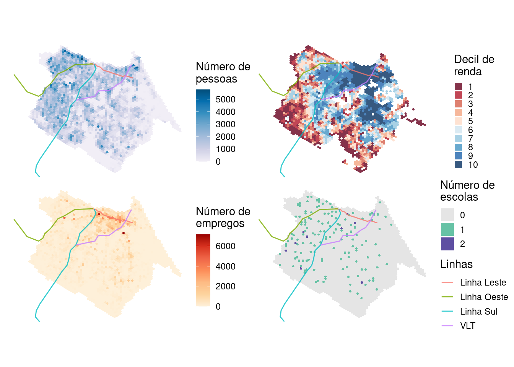
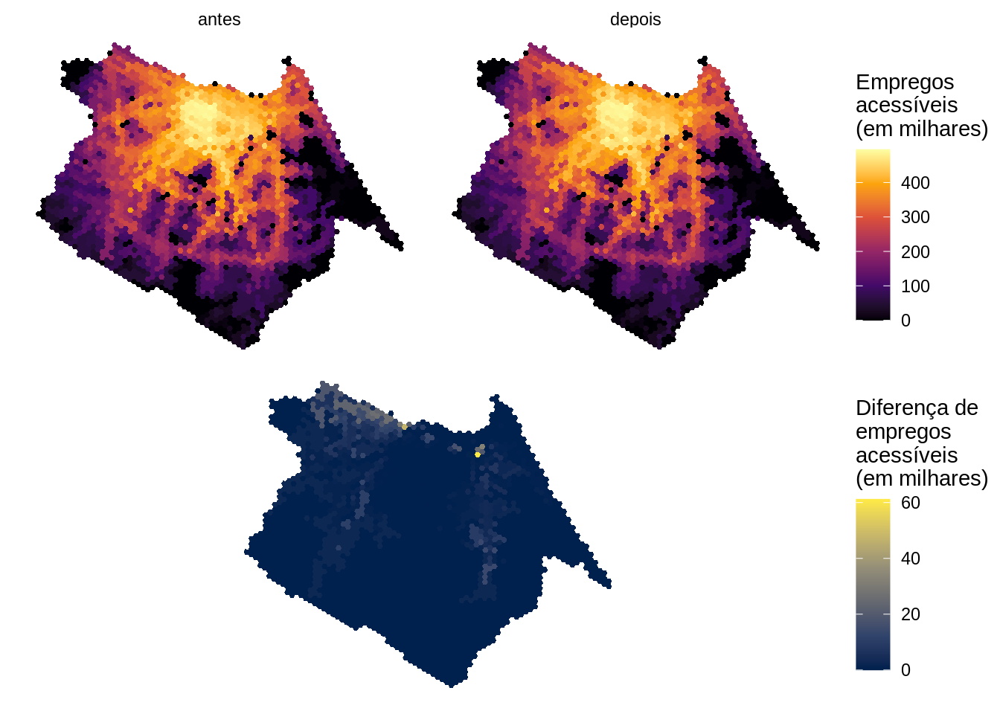
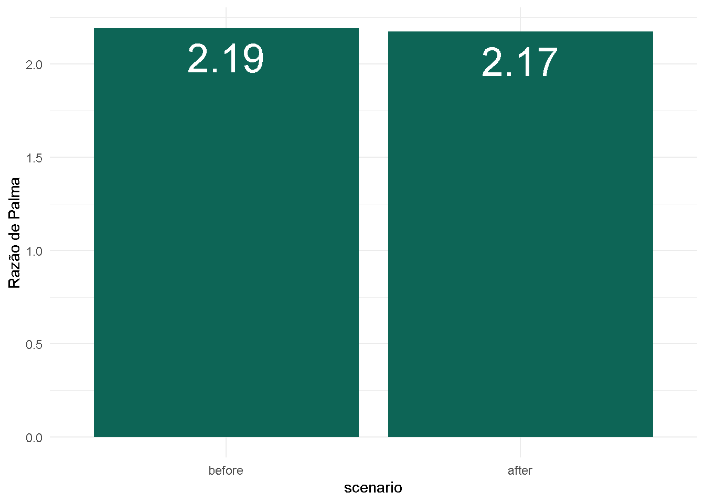

6 Comparando a acessibilidade entre dois cenários de transporte
Neste capítulo, vamos ilustrar como usar de forma conjunta o material ensinado nos capítulos anteriores para medir o impacto de um projeto de infraestrutura de transporte sobre a acessibilidade urbana. Para avaliar o impacto de projetos de transporte, precisaremos comparar os níveis de acessibilidade antes e depois da implementação do projeto. Precisamos, portanto:
- Utilizar diferentes conjuntos de arquivos GTFS para representar os cenários antes e depois da implementação do projeto;
- Calcular duas matrizes de tempo de viagem, uma antes e outra depois do investimento;
- Calcular os níveis de acessibilidade, tanto antes quanto depois do investimento;
- Comparar as condições de acessibilidade em cada cenário, examinando como os impactos se distribuem espacialmente e entre populações de diferentes níveis socioeconômicos.
Neste capítulo, vamos cobrir este passo-a-passo em detalhes, começando por uma breve apresentação do nosso estudo de caso.
6.1 Apresentação do estudo de caso
Como estudo de caso, vamos fazer uma avaliação do projeto de construção da Linha Leste do metrô de Fortaleza (Figura 6.1). O município de Fortaleza é a capital do estado do Ceará, localizado na região Nordeste do Brasil. Com uma população estimada de 2,7 milhões habitantes, Fortaleza é a quinta cidade mais populosa do Brasil.
Um dos grandes investimentos recentes no sistema de transporte de Fortaleza é a Linha Leste do metrô de Fortaleza. O traçado da Linha Leste possui 7,3 km de extensão e liga o Centro de Fortaleza ao bairro Papicu, permitindo a integração das linhas de metrô Sul e Oeste com corredores de Veículo Leve sobre Trilhos (VLT) e o terminal de ônibus no Papicu (Figura 6.2). Como a Linha Leste ainda estava em fase de construção quando da publicação deste livro, a análise deste capítulo trata de uma avaliação ex-ante - ou seja, em que avaliamos o futuro impacto de um projeto sobre a acessibilidade urbana. Este tipo de análise se contrapõe a avaliações ex-post, usadas para avaliar o impacto causado por projetos já implementados.

É importante notar que a implementação deste projeto também será acompanhada de mudanças nas frequências das linhas Sul e Oeste do metrô, além do racionamento do sistema de ônibus municipais, conforme o Plano de Acessibilidade Sustentável de Fortaleza (Pasfor)1. Para fins didáticos, no entanto, essas mudanças adicionais no sistema de transporte público não foram incorporadas aos cenários da nossa análise. Portanto, o estudo de caso que apresentamos aqui representa um cenário simplificado que considera apenas a implementação da Linha Leste. Para uma avaliação mais completa do impacto de acessibilidade da implementação da Linha Leste e das mudanças previstas no Pasfor, por favor veja o trabalho de Braga et al. (2022).
A população de Fortaleza está majoritariamente distribuída na região central e na porção oeste da cidade, embora haja alguns pontos de alta densidade populacional no sudeste da cidade. Via de regra, a população de mais alta renda (em tons de azul no mapa da distribuição de decis de renda) está localizada na região do centro expandido e sudeste do município, enquanto as populações de menor renda (em tons de vermelho) estão principalmente localizadas nas regiões periféricas ao sul e a oeste. Os empregos formais na cidade se distribuem principalmente ao longo de grandes avenidas, com uma maior concentração no centro da cidade. Em contraste, as escolas públicas de nível médio têm uma distribuição espacial mais equilibrada por todo território.

6.2 Dados GTFS usados na análise
Nesta análise, usaremos os arquivos GTFS disponibilizados pela Empresa de Transporte Urbano de Fortaleza (Etufor) e a Empresa do Metrô de Fortaleza (Metrofor). Esses dados descrevem o sistema de transporte público operante na cidade de Fortaleza em outubro de 2019. Como esses são arquivos grandes, somando quase 20 MB no total, eles não estão disponíveis dentro dos pacotes {r5r} e {gtfstools}, como nos exemplos que usamos até aqui no livro. Para ter acesso a esses dados nós usamos o código abaixo, que faz o download dos feeds de GTFS usando o pacote {httr}:
# criar o endereço de arquivos temporários na máquina local
metrofor_path <- tempfile("metrofor", fileext = ".zip")
etufor_path <- tempfile("etufor", fileext = ".zip")
# download dados da metrofor
httr::GET(
"https://github.com/ipeaGIT/intro_access_book/releases/download/data_1st_edition/gtfs_for_metrofor_2021-01.zip",
httr::write_disk(metrofor_path)
)# download dados da etufor
httr::GET(
"https://github.com/ipeaGIT/intro_access_book/releases/download/data_1st_edition/gtfs_for_etufor_2019-10.zip",
httr::progress(),
httr::write_disk(etufor_path)
)Para simularmos a implementação da nova Linha Leste do metrô, precisamos também de um feed que descreva como deverá ser a sua operação. Este feed deve conter algumas informações-chave, como por exemplo o traçado da futura linha de metrô, a localização de suas estações, o tempo de viagem entre estações e a frequência planejada dos serviços. Neste exemplo, vamos utilizar o GTFS do projeto da Linha Leste criado anteriormente pelo Ipea para um estudo mais detalhado de avaliação do impacto de acessibilidade deste projeto (Braga et al. 2022). Assim como os feeds da Etufor e da Metrofor, este arquivo GTFS está disponível para download no repositório do livro no GitHub e pode ser baixado com o código abaixo:
# criar o endereço do arquivo temporário
linha_leste_path <- tempfile("linha_leste", fileext = ".zip")
# download do GTFS da Linha Leste
httr::GET(
"https://github.com/ipeaGIT/intro_access_book/releases/download/data_1st_edition/gtfs_linha_leste.zip",
httr::write_disk(linha_leste_path)
)Esses três arquivos GTFS serão usados em conjunto para calcular as condições de acessibilidade de Fortaleza antes da implementação do projeto do corredor e para o cenário futuro, quando a Linha Leste estiver funcionando. No cenário pré Linha Leste, vamos calcular as matrizes de tempo de viagem com base apenas nos feeds da Metrofor e da Etufor de outubro de 2019, que representam a típica operação de transporte público da cidade antes da implementação do novo corredor. No cenário pós implementação, incluiremos também o GTFS da Linha Leste, incorporando à análise a operação planejada desta linha após sua finalização.
6.3 Cálculo das matrizes de tempo de viagem
Tendo definido quais dados GTFS vamos usar em cada um dos cenários de transporte público, o próximo passo é calcular as matrizes de tempo de viagem, que posteriormente serão utilizadas para estimar os níveis de acessibilidade. Para isso, vamos utilizar a função travel_time_matrix() do pacote {r5r}, como apresentado anteriormente na Section 3.1.
Antes de calcular as matrizes, no entanto, precisamos organizar os nossos arquivos na estrutura que o {r5r} requer. Com o código abaixo, criamos uma pasta separada para cada um dos nossos cenários (antes e depois) e salvamos nessas pastas os dados necessários para o roteamento:
# cria pasta raiz da análise de dados
analysis_dir <- "impact_analysis"
dir.create(analysis_dir)
# criando pasta dos cenários
dir_before <- file.path(analysis_dir, "before")
dir_after <- file.path(analysis_dir, "after")
dir.create(dir_before)
dir.create(dir_after)
# copiando os arquivos de GTFS para as pastas dos cenários antes e depois
file.copy(from = metrofor_path, to = file.path(dir_before, "metrofor.zip"))
file.copy(from = metrofor_path, to = file.path(dir_after, "metrofor.zip"))
file.copy(from = etufor_path, to = file.path(dir_before, "etufor.zip"))
file.copy(from = etufor_path, to = file.path(dir_after, "etufor.zip"))
file.copy(from = linha_leste_path, to = file.path(dir_after, "linha_leste.zip"))
# visualizando esquema de arquivos na pasta
fs::dir_tree(analysis_dir)impact_analysis
├── after
│ ├── etufor.zip
│ ├── linha_leste.zip
│ └── metrofor.zip
└── before
├── etufor.zip
└── metrofor.zipPara estimarmos o tempo de viagem na nossa área de estudo, precisamos ainda de um arquivo com os dados do OpenStreetMap representando a rede viária local, em formato .pbf. Opcionalmente, iremos utilizar também um arquivo representando a topografia local, em formato .tif. Esses arquivos, assim como os dados GTFS, estão disponíveis para download no repositório do livro. Partindo do pressuposto que a implementação da Linha Leste não afetaria o traçado das ruas e calçadas na região, bem como a topografia local, podemos usar os mesmos arquivos para o cálculo das duas matrizes de tempo de viagem. Com o código abaixo, vamos baixar esses dados e copiar os arquivos para as pastas dos dois cenários de transporte:
# cria endereço temporário dos arquivos na máquina local
pbf_path <- tempfile("street_network", fileext = ".osm.pbf")
tif_path <- tempfile("topography", fileext = ".tif")
# download dos dados de OSM
httr::GET(
"https://github.com/ipeaGIT/intro_access_book/releases/download/data_1st_edition/for_2020.osm.pbf",
httr::write_disk(pbf_path)
)# download dos dados de topografia
httr::GET(
"https://github.com/ipeaGIT/intro_access_book/releases/download/data_1st_edition/topografia3_for.tif",
httr::write_disk(tif_path)
)# copia arquivo para as pastas dos cenários antes e depois
file.copy(from = pbf_path, to = file.path(dir_before, "street_network.osm.pbf"))
file.copy(from = pbf_path, to = file.path(dir_after, "street_network.osm.pbf"))
file.copy(from = tif_path, to = file.path(dir_before, "topography.tif"))
file.copy(from = tif_path, to = file.path(dir_after, "topography.tif"))# visualizando esquema de arquivos na pasta
fs::dir_tree(analysis_dir)impact_analysis
├── after
│ ├── etufor.zip
│ ├── linha_leste.zip
│ ├── metrofor.zip
│ ├── street_network.osm.pbf
│ └── topography.tif
└── before
├── etufor.zip
├── metrofor.zip
├── street_network.osm.pbf
└── topography.tifCom os dados organizados nas pastas, podemos começar o cálculo das matrizes de tempo de viagem. A primeira etapa é construir a rede de transporte multimodal usada pelo {r5r} no roteamento, a partir dos dados da rede viária, do sistema de transporte público e de topografia. Como visto na Section 3.1, isto é feito com o comando setup_r5(), que também retorna uma conexão com o R5. Com o código abaixo, nós criamos duas redes, uma para cada cenário:
# aloca memória disponível para Java
options(java.parameters = "-Xmx4G")
# carrega biblioteca
library(r5r)
# cria rede de transporte multimodal de cada cenário
r5r_core_before <- setup_r5(dir_before, use_elevation = TRUE, verbose = FALSE)
r5r_core_after <- setup_r5(dir_after, use_elevation = TRUE, verbose = FALSE)Com as redes de transporte de cada cenário criadas, prosseguimos agora para o cálculo das matrizes de tempo de viagem. Nesta etapa, vamos utilizar como origens e destinos os centróides de uma grade espacial de hexágonos de Fortaleza, disponibilizada pelo pacote {aopdata} (mais detalhes sobre o pacote são apresentados na Seção 5). Cada hexágono tem uma área de 0.11 km², aproximadamente um quarteirão, o que permite uma análise espacial bem detalhada.
Para comparar adequadamente os dois cenários, precisamos calcular as duas matrizes considerando os mesmos parâmetros de viagem. Aqui, vamos considerar viagens a pé ou por transporte público, permitir distâncias de caminhada de no máximo 800 metros nas pernas de acesso e egresso das paradas de transporte público, e limitar o tempo máximo de viagem em até 60 minutos. Vamos considerar o horário de partida de 07:00h, durante o horário de pico de uma típica segunda-feira de operação:
# carrega bibliotecas
library(data.table)
library(aopdata)
library(sf)
# leitura dos dados da grade espacial
for_grid <- read_grid(city = "Fortaleza")
# geração dos centróides das células espaciais
points <- st_centroid(for_grid)
# renomeia o nome da coluna com id das células
names(points)[1] <- "id"
# calcula matriz de tempo de viagem do cenário 'antes'
ttm_before <- travel_time_matrix(
r5r_core_before,
origins = points,
destinations = points,
mode = c("WALK", "TRANSIT"),
departure_datetime = as.POSIXct(
"02-03-2020 07:00:00",
format = "%d-%m-%Y %H:%M:%S"
),
max_walk_dist = 800,
max_trip_duration = 60,
verbose = FALSE,
progress = FALSE
)
# calcula matriz de tempo de viagem do cenário 'depois'
ttm_after <- travel_time_matrix(
r5r_core_after,
origins = points,
destinations = points,
mode = c("WALK", "TRANSIT"),
departure_datetime = as.POSIXct(
"02-03-2020 07:00:00",
format = "%d-%m-%Y %H:%M:%S"
),
max_walk_dist = 800,
max_trip_duration = 60,
verbose = FALSE,
progress = FALSE
)
head(ttm_before) fromId toId travel_time
1: 89801040323ffff 89801040323ffff 2
2: 89801040323ffff 89801040327ffff 22
3: 89801040323ffff 8980104032fffff 14
4: 89801040323ffff 89801040333ffff 9
5: 89801040323ffff 89801040337ffff 30
6: 89801040323ffff 8980104036fffff 25head(ttm_after) fromId toId travel_time
1: 89801040323ffff 89801040323ffff 2
2: 89801040323ffff 89801040327ffff 22
3: 89801040323ffff 8980104032fffff 14
4: 89801040323ffff 89801040333ffff 9
5: 89801040323ffff 89801040337ffff 30
6: 89801040323ffff 8980104036fffff 25À primeira vista, nossas matrizes parecem iguais: todos os tempos de viagem na amostra de pares mostrados acima são idênticos. Isto ocorre porque o projeto de expansão do metrô fica restrito a uma área relativamente pequena, no centro da cidade de Fortaleza. Assim, muitos deslocamentos entre regiões da cidade de fato não são afetados pela implementação do corredor. Diversos pares origem-destino, no entanto, têm os tempos de viagens entre eles impactados pela Linha Leste:
# merge dos tempos de viagem dos dois cenários
comparison <- merge(
ttm_before,
ttm_after,
by = c("fromId", "toId"),
suffixes = c("_before", "_after")
)
# mostrar apenas os pares OD que deverão ter queda nos tempos de viagem
comparison[travel_time_after < travel_time_before] fromId toId travel_time_before travel_time_after
1: 89801041b2fffff 8980104c14bffff 55 54
2: 89801041b2fffff 8980104c15bffff 55 53
3: 89801041b2fffff 8980104c397ffff 52 48
4: 8980104532bffff 8980104c13bffff 57 53
5: 89801045363ffff 8980104c13bffff 57 53
---
8283: 8980107b6dbffff 8980104c02fffff 58 52
8284: 8980107b6dbffff 8980104c13bffff 48 42
8285: 8980107b6dbffff 8980104c14bffff 57 54
8286: 8980107b6dbffff 8980104c15bffff 58 53
8287: 8980107b6dbffff 8980104c397ffff 58 486.4 Cálculo da acessibilidade nos cenários antes e depois
O cálculo da acessibilidade é muito simples, exigindo apenas um processamento básico dos nossos dados e a aplicação de uma das funções de cálculo de acessibilidade do pacote {accessibility}. Para facilitar o tratamento dos dados, vamos empilhar as matrizes de tempo de viagem dos dois cenários em uma única tabela, identificando cada cenário com a coluna scenario:
# empilhando matrizes de tempo de viagem antes e depois
ttm <- rbind(ttm_before, ttm_after, idcol = "scenario")
ttm[, scenario := factor(scenario, labels = c("before", "after"))]
ttm scenario fromId toId travel_time
1: before 89801040323ffff 89801040323ffff 2
2: before 89801040323ffff 89801040327ffff 22
3: before 89801040323ffff 8980104032fffff 14
4: before 89801040323ffff 89801040333ffff 9
5: before 89801040323ffff 89801040337ffff 30
---
3336964: after 8980107b6dbffff 8980107b6cbffff 8
3336965: after 8980107b6dbffff 8980107b6cfffff 14
3336966: after 8980107b6dbffff 8980107b6d3ffff 9
3336967: after 8980107b6dbffff 8980107b6d7ffff 15
3336968: after 8980107b6dbffff 8980107b6dbffff 0Para o cálculo da acessibilidade, vamos precisar de uma tabela com os dados de uso do solo da cidade de Fortaleza. Para isso, usamos a função read_landuse() do pacote {aopdata}, que traz dados de contagem populacional e de oportunidades em cada hexágono da cidade.
# download dados de uso do solo
for_data <- aopdata::read_landuse(city = "Fortaleza", showProgress = FALSE)Para fins de demonstração, vamos calcular a acessibilidade a postos de trabalho e a escolas públicas de ensino médio na nossa área de estudo. Os dados do total de empregos e de escolas de nível médio em cada hexágono estão listados nas colunas T001 e E004, respectivamente. Vamos renomeá-las para facilitar sua identificação e manter apenas as colunas necessárias na tabela de dados de uso do solo. Vamos manter também as colunas P001, de população total em cada hexágono, e R003, do decil de renda em que cada hexágono se encontra, que serão úteis mais à frente:
# nome das colunas a serem mantidas
cols_to_keep <- c("id", "jobs", "schools", "population", "decile")
# renomeando colunas
setnames(
for_data,
old = c("id_hex", "T001", "E004", "P001", "R003"),
new = cols_to_keep
)
# deletando demais colunas que não vamos usar
for_data[, setdiff(names(for_data), cols_to_keep) := NULL]
for_data id population decile jobs schools
1: 89801040323ffff 30 1 0 0
2: 89801040327ffff 318 1 7 0
3: 8980104032bffff 0 NA 0 0
4: 8980104032fffff 103 1 98 0
5: 89801040333ffff 43 1 0 0
---
2558: 8980107b6cbffff 2575 4 124 0
2559: 8980107b6cfffff 2997 3 4 0
2560: 8980107b6d3ffff 1751 8 14 0
2561: 8980107b6d7ffff 2032 4 134 0
2562: 8980107b6dbffff 1896 9 193 0Uma decisão-chave no cálculo de acessibilidade é a escolha da medida a ser utilizada. É extremamente importante pesar as vantagens e desvantagens de cada medida e compreender quais indicadores se adequam às oportunidades para as quais se deseja calcular os níveis de acessibilidade. Neste exemplo, utilizaremos duas medidas distintas:
No cálculo da acessibilidade a empregos, vamos usar a medida de oportunidades cumulativas. Esta métrica nos permite entender quantos empregos são acessíveis dentro de um determinado custo de viagem, representando, desta forma, a oferta de empregos aos habitantes de cada uma das células de nossa grade. Embora essa medida não leve em consideração a competição por empregos, sua principal vantagem é que ela é de muito simples comunicação e interpretação. Em nosso exemplo, vamos tomar como limite de custo um tempo de viagem de 60 minutos, valor muito próximo do tempo médio de deslocamento casa-trabalho por transporte público de Fortaleza em 2019 (cerca de 58 minutos, segundo o Pasfor).
No cálculo da acessibilidade a escolas públicas, vamos usar a medida de custo mínimo de viagem. Esta métrica é especialmente útil para avaliar a cobertura de serviços públicos essenciais, como educação e saúde básica. Com ela, podemos, por exemplo, identificar as parcelas da população que estão a uma distância maior do que a considerada razoável para acessar esses serviços essenciais.
Como mostrado anteriormente, na Section 3.2, o cálculo dessas medidas pode ser feito com as funções cumulative_cutoff() e cost_to_closest(), respectivamente, do pacote {accessibility}:
# carrega biblioteca
library(accessibility)
# renomeia colunas
setnames(ttm, old = c("fromId", "toId"), new = c("from_id", "to_id"))
# calcula medida de oportunidades cumulativas
access_to_jobs <- cumulative_cutoff(
travel_matrix = ttm,
land_use_data = for_data,
opportunity = "jobs",
travel_cost = "travel_time",
cutoff = 60,
group_by = "scenario"
)
access_to_jobs id scenario jobs
1: 89801040323ffff before 46159
2: 89801040327ffff before 25499
3: 8980104032bffff before 118
4: 8980104032fffff before 66513
5: 89801040333ffff before 46159
---
5120: 8980107b6cbffff after 366197
5121: 8980107b6cfffff after 256888
5122: 8980107b6d3ffff after 324981
5123: 8980107b6d7ffff after 338965
5124: 8980107b6dbffff after 361967# calcula medida de tempo mínimo de viagem
time_to_schools <- cost_to_closest(
travel_matrix = ttm,
land_use_data = for_data,
opportunity = "schools",
travel_cost = "travel_time",
group_by = "scenario"
)
time_to_schools id scenario travel_time
1: 89801040323ffff before 36
2: 89801040323ffff after 36
3: 89801040327ffff before 41
4: 89801040327ffff after 41
5: 8980104032bffff before Inf
---
5120: 8980107b6d3ffff after 18
5121: 8980107b6d7ffff before 14
5122: 8980107b6d7ffff after 14
5123: 8980107b6dbffff before 15
5124: 8980107b6dbffff after 15Como podemos ver, o resultado da função de custo mínimo de viagem inclui alguns valores Inf. As origens listadas com este valor não conseguem alcançar nenhuma escola pública de nível médio dentro de 60 minutos (limite de tempo de viagem imposto no cálculo da matriz). O valor Inf, portanto, é utilizado para sinalizar esta condição. Para fins de simplicidade, vamos considerar que essas regiões estão a 80 minutos de viagem de uma escola. Assim, nós podemos calcular a diferença de acessibilidade entre os cenários da seguinte maneira:
# imputa tempo de viagem de 80 min. para valores Inf
time_to_schools[
,
travel_time := ifelse(is.infinite(travel_time), 80, travel_time)
]
# calcula diferença de acessibilidade entre cenários
access_to_jobs[, diff := shift(jobs, type = "lead") - jobs, by = id]
time_to_schools[
,
diff := shift(travel_time, type = "lead") - travel_time,
by = id
]6.5 Análise dos níveis de acessibilidade antes e depois
Agora que calculamos os níveis de acessibilidade em cada cenário, precisamos compreender como a futura implementação da Linha Leste impacta as condições de acessibilidade em nossa área de estudo. Como primeira análise exploratória, podemos investigar o impacto deste corredor sobre a acessibilidade média da cidade. Para isso, calculamos a quantidade média de empregos acessíveis em cada cenário. Aqui, é importante calcular a média de acessibilidade ponderada pela população de cada hexágono.
Os resultados abaixo mostram que a população de Fortaleza conseguia acessar em média 240.663 empregos em até 60 minutos de transporte público antes da expansão do metrô, em 2019. A implementação da Linha Leste aumenta esse valor em 1%, para 243.023 empregos acessíveis, em média.
# carrega biblioteca de visualização de dados
library(ggplot2)
library(patchwork)
# recupera info da população residente e renda nos hexágonos
access_to_jobs[
for_data,
on = "id",
c("population", "decile") := list(i.population, i.decile)
]
# calcula média ponderada de acessibilidade antes e depois
avg_access <- access_to_jobs[
,
.(avg_access = weighted.mean(x = jobs, w = as.numeric(population))),
by = scenario
]
# figura
ggplot(data = avg_access, aes(x = scenario, y = avg_access / 1000)) +
geom_col(fill = "#0f3c53") +
geom_text(
aes(label = round(avg_access / 1000, digits = 1)),
vjust = 1.5,
color = "white",
size = 10
) +
ylab("Empregos acessíveis\n(em milhares)") +
theme_minimal()
Analisando o tempo médio de acesso à escola pública de ensino médio mais próxima, notamos que a Linha Leste pouco altera a acessibilidade a essas escolas. Em média, em 2019 a população de Fortaleza demorava cerca de 13 minutos para chegar à escola pública de ensino médio mais próxima de sua casa. Após a conclusão da extensão do metrô, esse resultado permanecerá praticamente inalterado.
# recupera info da população residente nos hexágonos
time_to_schools[for_data, on = "id", population := i.population]
# calcula média ponderada de acessibilidade antes e depois
avg_time <- time_to_schools[
,
.(avg_time = weighted.mean(x = travel_time, w = as.numeric(population))),
by = scenario
]
# figura
ggplot(data = avg_time, aes(x = scenario, y = avg_time)) +
geom_col(fill="#0d6556") +
geom_text(
aes(label = round(avg_time, digits = 2)),
vjust = 1.5,
color = "white",
size = 10
) +
ylab("Média do tempo até a escola\nmais próxima (em minutos)") +
theme_minimal()
Em síntese, os resultados mostram que a construção da Linha Leste do metrô tem baixo impacto na acessibilidade média da população, tanto quando olhamos para empregos quanto para escolas de nível médio. Esse resultado ocorre, em grande medida, por duas razões. A primeira delas é o fato de estarmos fazendo uma análise simplificada, que considera apenas o projeto da Linha Leste e ignora as demais medidas que deverão acompanhar esta intervenção, como o aumento de frequência das outras linhas de metrô da cidade, por exemplo. A segunda razão se dá pelo fato de que a proposta de corredor da Linha Leste consiste em um trecho relativamente pequeno da rede de transporte localizado próximo ao centro da cidade, região de mais alta acessibilidade da cidade já em 2019. Sendo assim, os benefícios de acessibilidade deste corredor, quando ignoradas as demais intervenções que acompanham sua implementação, se concentram em áreas que pouco têm a ganhar em termos de acessibilidade.
Embora tenhamos visto que a Linha Leste de forma isolada tem pequeno impacto na acessibilidade média de toda a cidade, é importante entendermos como esse impacto varia espacialmente. Para isso, vamos juntar nossas tabelas de estimativas de acessibilidade com a grade espacial da nossa área de estudo, disponível no objeto for_grid, baixado do pacote {aopdata} anteriormente.
# traz info espacial para tabelas de acessibilidade
setDT(for_grid)
access_to_jobs[for_grid, on = c(id = "id_hex"), geom := i.geom]
time_to_schools[for_grid, on = c(id = "id_hex"), geom := i.geom]
# converte tabela em objeto espacial
access_to_jobs_sf <- st_sf(access_to_jobs)
time_to_schools_sf <- st_sf(time_to_schools)Feito isso, podemos mostrar em mapas a distribuição espacial dos níveis de acessibilidade nos cenários antes e depois, bem como a diferença de acessibilidade entre os dois cenários. Primeiro, para a acessibilidade a empregos:
# mapas dos cenários antes-e-depois
access_dist <- ggplot(access_to_jobs_sf) +
geom_sf(aes(fill = jobs), color = NA) +
facet_wrap(~ scenario, nrow = 1) +
scale_fill_viridis_c(
option = "inferno",
label = scales::label_number(scale = 1 / 1000)
) +
labs(fill = "Empregos\nacessíveis\n(em milhares)", color='Linhas') +
geom_sf(data=rail_sf, aes(color=shape_id), alpha=.8, show.legend = FALSE) +
scale_color_manual(values=c("#F8766D", "#7CAE00", "#00BFC4", "#C77CFF")) +
theme_void() +
theme(legend.key.size = unit(.5, 'cm'))
# mapa da diferença
diff_dist <- ggplot(subset(access_to_jobs_sf, !is.na(diff))) +
geom_sf(aes(fill = diff), color = NA) +
scale_fill_viridis_c(
option = "cividis",
label = scales::label_number(scale = 1 / 1000)
) +
labs(fill = "Diferença de\nempregos\nacessíveis\n(em milhares)", color='Linhas') +
geom_sf(data=rail_sf, aes(color=shape_id), alpha=.8) +
scale_color_manual(values=c("#F8766D", "#7CAE00", "#00BFC4", "#C77CFF")) +
theme_void() +
theme(legend.key.size = unit(.5, 'cm'))
# plot
access_dist /diff_dist + plot_layout(ncol = 1, heights = c(1, 1))
Os ganhos de acessibilidade ao emprego se concentram principalmente próximos às estações do novo corredor e dos corredores já existentes que se ligam a ele. Isto mostra como a implantação de uma infraestrutura de transporte pode impactar não apenas suas imediações, mas também locais mais afastados, graças à conectividade da rede de transporte. Os mapas de distribuição no tempo de acesso a escolas de nível médio, no entanto, apresentam uma situação diferente:
# mapas dos cenários antes-e-depois
time_dist <- ggplot(time_to_schools_sf) +
geom_sf(aes(fill = travel_time), color = NA) +
facet_wrap(~ scenario, nrow = 1) +
scale_fill_viridis_c(option = "plasma", direction = -1) +
labs(fill="Tempo até\n a escola\nmais próxima\n(em minutos)") +
theme_void()
# mapa da diferença
time_diff_dist <- ggplot(subset(time_to_schools_sf, !is.na(diff))) +
geom_sf(aes(fill = diff), color = NA) +
scale_fill_viridis_c(option = "viridis", direction = -1) +
labs(fill="Diferença no\ntempo até\n a escola\nmais próxima\n(em minutos)") +
theme_void()
# plot
time_dist / time_diff_dist + plot_layout(ncol = 1, heights = c(1, 1))
A Linha Leste praticamente não altera o panorama da acessibilidade a escolas de nível médio em Fortaleza, o que faz com que pouquíssimos hexágonos apresentem algum tipo de ganho de acessibilidade entre os dois cenários. Diferentemente da distribuição de empregos, que tende a seguir critérios econômicos, a distribuição de equipamentos públicos como escolas tende a ser planejada usando critérios de equidade, sendo, portanto, mais equilibrada no território. Isso explica porque observamos maiores níveis de acessibilidade em quase todas as regiões da cidade. Como consequência, a construção da Linha Leste na parte central da cidade não afeta o tempo de acesso das pessoas que moram em locais afastados desse corredor. Não apenas isso, mas mesmo para as pessoas que moram perto do novo corredor a sua implementação não muda os níveis de acesso a escolas, com pouquíssimas exceções. Isto é um sinal que esta área possui uma boa oferta de escolas e já é bem servida de transporte público, mesmo antes da finalização da Linha Leste.
6.6 Desigualdade de acessibilidade
Uma dimensão-chave para avaliação de políticas de transporte é o seu aspecto distributivo. Quem são os principais beneficiados e prejudicados por essas políticas? Sob uma perspectiva de equidade, espera-se que políticas governamentais priorizem melhorar as condições de acessibilidade das pessoas em piores condições socioeconômicas e que mais dependem do transporte público (Pereira, Schwanen, and Banister 2017; van Wee 2022).
Nesta seção, vamos examinar como os ganhos de acessibilidade ao emprego decorrentes da expansão do metrô de Fortaleza se distribuem entre pessoas de diferentes níveis de renda. Para isso, precisamos entender como o nível de acesso a empregos se distribuía entre a população em 2019, antes da construção da Linha Leste, e como essa distribuição será alterada pela implementação da linha do metrô. O gráfico box plot abaixo apresenta a distribuição dos níveis de acessibilidade entre grupos socioeconômicos nesses dois cenários.
# distribuição de acessibilidade por renda antes-e-depois
ggplot(data = access_to_jobs[population > 0]) +
geom_boxplot(
aes(
x = as.factor(decile),
y = jobs / 1000,
color = as.factor(decile),
weight = population,
group = decile
),
show.legend = FALSE
) +
facet_wrap(~ scenario, nrow = 1) +
scale_colour_brewer(palette = "RdBu") +
labs(x = "Decil de renda", y = "Empregos acessíveis\n(em milhares)") +
scale_x_discrete(
labels = c("D1\nmais\npobres", paste0("D", 2:9), "D10\nmais\nricos")
) +
theme_minimal()
Os dois gráficos mostram claramente que as pessoas mais ricas de Fortaleza possuem maiores níveis de acesso a empregos do que seus pares mais pobres, tanto antes quanto depois da implementação da Linha Leste. Em Fortaleza, assim como na maior parte das grandes cidades brasileiras, os mais ricos tendem a morar próximos às grandes concentrações de emprego e do centro da cidade, enquanto os mais pobres tendem a ocupar regiões periféricas (Pereira et al. 2022). Consequentemente, os mais ricos costumam ter melhores condições de acessibilidade urbana do que os mais pobres - não apenas porque moram mais perto dos empregos, mas porque também, geralmente, moram em regiões centrais mais bem servidas de transporte público do que as periferias.
Assim como no caso da distribuição espacial da acessibilidade, no entanto, é difícil enxergar nos box plots acima grandes mudanças nas condições de acessibilidade entre os dois cenários. Lançando mão do mesmo recurso que usamos anteriormente, apresentamos na próxima figura como os ganhos de acessibilidade entre os cenários se distribuem por decil de renda:
# diferença entre cenários
ggplot(data = access_to_jobs[population > 0 & !is.na(diff)]) +
geom_boxplot(
aes(
x = as.factor(decile),
y = diff,
color = as.factor(decile),
weight = population,
group = decile
),
show.legend = FALSE
) +
scale_colour_brewer(palette = "RdBu") +
labs(
x = "Decil de renda",
y = "Quantidade a mais de\nempregos acessíveis (em milhares)"
) +
scale_x_discrete(
labels = c("D1\nmais\npobres", paste0("D", 2:9), "D10\nmais\nricos")
) +
theme_minimal()
Como podemos ver, as parcelas mais pobres da população, dos decis 1 e 2, foram as que tiveram menores ganhos de acessibilidade. A partir do terceiro decil de renda, os ganhos estabilizam-se e permanecem relativamente parecidos. Ainda assim, é possível observar ganhos ligeiramente maiores entre as camadas médias da população, em especial os decis 5, 6 e 7. O hexágono no qual houve maior aumento de acessibilidade aparece como outlier do 10º decil, apresentando um ganho de mais de 60.000 empregos em relação ao cenário pré-implementação.
Gráficos como os das últimas duas figuras não são os mais simples de comunicar, exatamente por serem ricos em nuances e interpretações. Visando facilitar esta comunicação, medidas sintéticas de desigualdade são frequentemente utilizadas como uma maneira simples de medir o impacto de políticas de transporte sobre a desigualdade de acessibilidade. Este tipo de medida busca resumir a distribuição dos níveis de acessibilidade entre grupos populacionais (aqui, decis de renda) em um único indicador que facilite a compreensão dos resultados e que possa ser usado, por exemplo, na elaboração de planos e metas. As medidas de desigualdade mais frequentemente utilizadas na literatura de acessibilidade são a Razão de Palma e o Índice de Gini (Lucas, van Wee, and Maat 2016; Guzman and Oviedo 2018; Pritchard et al. 2019).
Neste exemplo, vamos calcular a Razão de Palma dos cenários antes e depois. Esta medida é o resultado da divisão da acessibilidade média dos 10% mais ricos pela acessibilidade média dos 40% mais pobres:
\[P = \frac{\overline{A_{tp10}}}{\overline{A_{bt40}}}\]
em que \(P\) é a Razão de Palma, \(\overline{A_{tp10}}\) é a acessibilidade média dos 10% mais ricos e \(\overline{A_{bt40}}\) é a acessibilidade média dos 40% mais pobres.
Por que usar a Razão de Palma?
Uma das vantagens da Razão de Palma frente ao Índice de Gini é a sua facilidade de comunicação e interpretação. Valores maiores do que 1 indicam um cenário em que os ricos possuem níveis médios de acessibilidade maiores do que os dos pobres, e valores menores do que 1 a situação inversa. Outra vantagem da Razão de Palma é que ela reflete claramente como a desigualdade varia entre dois grupos de especial interesse para nós: os mais privilegiados e os mais vulneráveis de uma população. O Índice de Gini, por sua vez, estima o quanto uma distribuição desvia de uma situação hipotética em que todos possuem o mesmo nível de acesso, mas nada diz sobre as condições socioeconômicas daqueles que detêm os maiores e menores níveis de acessibilidade. Se uma determinada política aumenta os níveis de acessibilidades de pessoas de alta renda que moram em locais de baixa acessibilidade, por exemplo, o Índice de Gini indicaria que houve uma diminuição da desigualdade, mesmo que nenhuma população vulnerável tenha se beneficiado dessa política. Dificilmente uma política como essa poderia ser considerada equitativa.
Ao calcularmos a Razão de Palma nos cenários antes e depois da implementação da Linha Leste, conseguimos entender qual é o seu impacto na desigualdade de acesso a empregos em Fortaleza:
# calcula acessibilidade média dos mais ricos nos cenários antes-e-depois
richest_access <- access_to_jobs[
decile == 10,
.(access = weighted.mean(jobs, w = population)),
by = scenario
]
# calcula acessibilidade média dos mais pobres nos cenários antes-e-depois
poorest_access <- access_to_jobs[
decile %in% 1:4,
.(access = weighted.mean(jobs, w = as.numeric(population))),
by = scenario
]
# combina acessibilidade dos ricos e pobres
palma_ratio <- merge(
richest_access,
poorest_access,
by = "scenario",
suffixes = c("_richest", "_poorest")
)
# calculando Razão de Palma
palma_ratio[, palma := access_richest / access_poorest]
# figura
ggplot(data = palma_ratio, aes(x = scenario, y = palma)) +
geom_col(fill = "#0d6556") +
geom_text(
aes(label = round(palma, digits = 2)),
vjust = 1.5,
color = "white",
size = 10
) +
ylab("Razão de Palma") +
theme_minimal()
A figura acima aponta que em 2019 a população mais rica de Fortaleza conseguia acessar em até 60 minutos de transporte público, em média, 2,19 vezes mais empregos do que a população mais pobre. O gráfico também mostra que a desigualdade medida pela Razão de Palma sofreu uma pequena queda entre os cenários pré e pós implementação da Linha Leste. Ou seja, podemos concluir que, neste nosso cenário simplificado de avaliação da Linha Leste, a expansão do metrô de Fortaleza seria uma política progressiva - embora apenas ligeiramente, dada a pequena magnitude da mudança entre os dois momentos analisados. Em outras palavras, a Linha Leste, quando analisada de forma isolada das demais intervenções que acompanham sua implementação, contribui positivamente para a redução da desigualdade de acesso a oportunidades de emprego em Fortaleza.
É importante lembrar que a avaliação apresentada neste capítulo olha para um cenário de intervenção simplificado para fins didáticos. Para uma avaliação mais completa da Linha Leste do metrô de Fortaleza, que também considera ajustes nas frequências de outros corredores e mudanças nas linhas de ônibus da cidade, veja o trabalho de Braga et al. (2022).
Neste capítulo, focamos na avaliação de impacto de políticas de transporte sobre as condições de acessibilidade da população. Vale ressaltar, no entanto, que a avaliação completa de uma política pública deve considerar também critérios como a participação social na formulação da política e os seus impactos considerando dimensões ambientais, econômicas, sociais, entre outras. Embora uma avaliação de impacto de acessibilidade seja muito importante para a caracterização dos potenciais benefícios e desempenho de redes de transporte como um todo, ela é apenas uma dessas dimensões, e deve complementar ou ser complementada por outras análises.
Disponível em https://www.pasfor.com.br/.↩︎